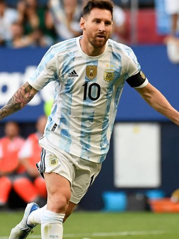

Los datos más relevantes del mejor jugador de la historia

Debut
16 de octubre de 2004 (F. C. Barcelona)
Clubes
Fc BarcelonaParis Saint-Germain
Estadísticas
784 goles (90 en selección) 40 títulos421 asistencias
Records
Máximo goleador sudamericano de la historia del fútbol en partidos oficiales: 758 goles.Máximo goleador de la historia del fútbol en un mismo club: 672 goles con el Barcelona.Más goles oficiales en un año natural (club y selección nacional): en 2012, con 86 goles, ingresó al Guinness World Records, pero terminó el año con 91Más goles oficiales en una misma temporada (club y selección nacional): 82 goles en 69 partidos en 2011-12.Más goles oficiales en un año natural (club): 84 (59 en la Liga, 13 en la Champions, 5 en la Copa del Rey y 2 en la Supercopa) en 2012.Más goles oficiales en una misma temporada (club): 73 goles en 60 partidos en 2011-2012 (50 en la Primera División de España, 14 en la Liga de Campeones de la UEFA, 3 en la Copa del Rey, 3 en la Supercopa de España, 1 en la Supercopa de Europa y 2 en la Copa Mundial de Clubes de la FIFA).Único jugador de la historia en anotar 50 o más goles en nueve años distintos: 60 (2010), 59 (2011), 91 (2012), 58 (2014), 52 (2015), 59 (2016), 50 (2017), 51 (2018), 50 (2019).Máximo ganador del premio al mejor jugador del mundo por la FIFA: 6 veces (4 FIFA Balón de Oro, 1 FIFA World Player y 1 The Best FIFA).Máximo ganador del Balón de Oro: 7 vecesMáximo ganador de la Bota de Oro: 6 veces